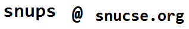

개요
SNUPC 2018은 서울대학교 컴퓨터공학부 문제풀이 및 알고리즘 동아리 SNUPS에서 주최하고 NAVER, 서울대학교 컴퓨터공학부와 스타트링크가 후원하는 컴퓨터 프로그래밍 경시대회입니다.
주어진 시간 내에 정해진 문제들을 많이 풀어내는 것으로 경쟁합니다. 주로 자료구조, 알고리즘, 간단한 수학 지식과 아이디어를 활용하여 알고리즘을 설계하고 프로그램을 작성하게 됩니다.
- 주최 및 주관: SNUPS
- 후원: NAVER, 서울대학교 컴퓨터공학부, 스타트링크
일정
- 신청 : 9월 1일 0시 ~ 9월 8일 18시 (조기마감될 수 있습니다)
- 대회 : 2018년 9월 9일 (일) 12:40 ~ 17:00
- 결과 발표 및 시상 : 2018년 9월 9일 (일) 17:10
- 뒷풀이 : 18:30 ~ (뒷풀이 비용 지원됩니다)
장소
서울대학교 302동 311-1호 소프트웨어 실습실
분야
- Division 2, Division 1 두 개의 분야로 나뉘어 대회가 진행됩니다.
- 참가자는 두 분야 중 하나의 분야를 골라 참가할 수 있습니다.
Division 2
- 기초 수준의 알고리즘 지식을 갖고 있으며, 프로그래밍 대회가 익숙하지 않은 사람들을 위한 대회입니다.
- 비교적 낮은 수준의 알고리즘 지식과 사고력, 구현 능력을 요구하는 문제가 출제됩니다.
Division 1
- 충분한 알고리즘 지식과 온/오프라인 프로그래밍 대회 경험을 갖춘 사람들을 위한 대회입니다.
- 온라인 대회 플랫폼의 Div 1 대회 참가 자격이 있거나 그에 근접한 사람(Codeforces의 경우 rating 1900 이상)에게 권장합니다.
- 다양한 분야에서 일반적인 난이도의 문제가 출제됩니다.
- Div 2에 비해 더 많은 상품과 경품이 주어집니다.
상품
본상 : Division 1
- 1등 : 40만원 상당의 무언가
- 2~3등 : 30만원 상당의 무언가
- 4~6등 : 12만원 상당의 무언가
- 7~10등 : 8만원 상당의 무언가
- 11~15등 : 4만원 상당의 무언가
본상 : Division 2
- 1등 : 12만원 상당의 무언가
- 2~3등 : 8만원 상당의 무언가
- 4~6등 : 4만원 상당의 무언가
※ 상품은 변경될 수 있습니다.
규정
참가 자격
- 서울대학교 학생이면 학과와 상관없이 누구나 참가 가능합니다. 대학원생, 휴학생도 포함합니다.
- 서울대학교 학생이 아니라면 참가할 수 없습니다.
- C, C++, Java 또는 Python으로 페이지 하단에 제공된 샘플 문제 같은 문제들을 풀 수 있어야 합니다.
대회 진행
- 기본적으로 2018 한국 대학생 프로그래밍 경시대회의 방식을 따릅니다.
반드시 여기에서 관련 내용을 확인하여야 합니다.
- 단, 개인전으로 진행합니다. 컴퓨터는 한 명당 한 대만 사용합니다.
- 진행 시간: 4시간
- 사용 언어 : C99, C11, C++11, C++14, C++17, Java 8, Python 2, Python 3
- C++14 혹은 C++17 이외의 언어로 풀 수 있음이 보장되지 않습니다.
- 대회 플랫폼 : Baekjoon Online Judge
- 아래 제시된 언어 레퍼런스 사이트를 제외한 인터넷 사용은 허용되지 않습니다.
- C/C++: cppreference.com
- Python 2: Python 2.7.15 documentation
- Python 3: Python 3.6.6 documentation
- Java: Java™ Platform, Standard Edition 8 API Specification
- 참고용 책과 인쇄한 출력물만 허용합니다. 컴퓨터에 자료를 전자적으로 전송하는 것은 허용하지 않습니다. 분량에는 제한이 없습니다.
- 중도 퇴실은 가능하지만, 시상식에 참석하지 않을 경우 상품을 받을 수 없습니다.
- 참가자 전원에게 대회 중 먹을 수 있는 다과와 음료가 제공됩니다.
대회 환경
참가자 PC 환경
- OS : Ubuntu 18.04
- Editor : vim 8.0, gvim 8.0, emacs 25.2, Eclipse Photon(Java) 4.8, Code::Blocks 16.01, gedit 3.28
채점 서버 환경
- CPU : Intel(R) Xeon(R) CPU E5-2666 v3 @ 2.90 GHz
- RAM : 3.75 GB
- OS : Ubuntu 16.04.4 LTS
출제경향
부정행위 등의 경우
상품을 받을 기회를 박탈당하고, 강제로 퇴장당할 수 있습니다. 정도에 따라 이후 대회 참가가 제한될 수 있습니다.
등록
- 신청해주신 분께는 개별적으로 확인 문자를 넣어드립니다.
- 장소가 좁은 관계로 많은 사람이 신청할 경우 조기 마감될 수 있습니다. 최대 60명까지 받습니다.
- 참가하지 못하게 된 경우 꼭 연락해 주세요.
문의

샘플 문제
참가 신청